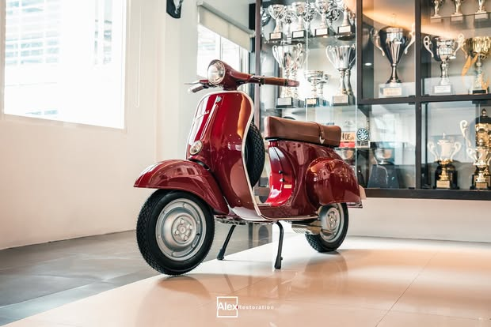

Quezon City, Philippines
Classics, brought back properly
Complete restoration, bodywork and oven-baked paint, detailing and ceramic coating — done in our own shop, photographed as we go.
What we do
Four things, done all the way through
Every car that comes in goes through the same shop, the same booth and the same final inspection. We would rather name the exact work than sell a package.
Full restoration
Complete and targeted builds for classic cars and motorcycles, from strip-down to the finished, running vehicle.
Read more 02Body & paint
Precision bodywork, panel and surface repair, and oven-baked painting in our own booth.
Read more 03Detailing
Interior and exterior detailing and paint correction, on our own builds and on cars brought to us.
Read more 04Ceramic coating
Coating on finished restorations and modern cars, with PPF removal and surface prep beforehand.
Read moreFeatured builds
Cars we finished, start to finish
Each of these was restored in our shop and photographed here — the hero shot, the angles, the details and the result.
Datsun 240Z
A complete bare-shell rebuild finished in white, ceramic coated, and taken to the show floor.
View the restoration
Mercedes-Benz 280SL
Precision bodywork, oven-baked paint, and interior and exterior detailing on a 1968 SL.
View the restoration
Vespa 50S
A complete scooter restoration taken down to the last grip, badge and spare wheel.
View the restoration
Craftsmanship
The detail is the whole job
Panel gaps, badges, switches, stitching, chrome and the finish under the light — these are the parts an owner looks at first and the parts that take the longest.
We work in stages and we photograph each one, so you can see what was actually done to your car rather than take our word for it.

Meet the shop
The people behind the finish
Customers are not handing over an ordinary car. They are trusting the same Quezon City team to assess it, document the work and carry the standard from strip-down to final inspection.
The launch version can introduce Alex and the specialists by name, experience and area of craft — turning a respected social presence into a shop customers feel they already know.
Track record
Show cars, not just finished cars
Our work is judged in public every year. The trophies in the shop are the shortest version of our resume.
*As stated on our own Facebook page as of August 2026. Follower count is current at that date.
Bring us the car
Tell us the model, the condition and what you want back. We will tell you honestly what the work involves.